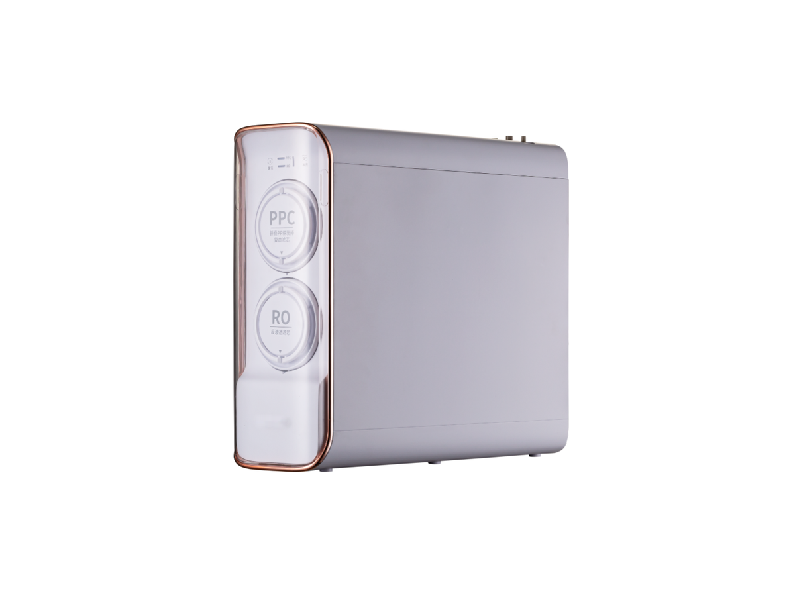

Sottolavello
SottolavelloRP-U07
Purificatore RO sottolavello 400–600 GPD
SKU: RP-U07
MOQ: da confermare su richiesta
Pagina iniziale/Prodotti/Sistemi RO sottolavello/ RP-U01

Sistemi RO sottolavello
Sistema RO con cartuccia estraibile senza attrezzi (M2)
RP-U01 — Sistema RO con cartuccia estraibile senza attrezzi. Specifica chiave: opzioni di capacità RO 600 / 800 / 1000 GPD. Le specifiche sono confermate per modello e ordine. È disponibile anche una variante bianca con finitura color rame (800–1400 GPD), oltre a una variante 400–800G; vedere Varianti sotto.
Richiedi un preventivo per RP-U01
Tensione / frequenza configurabili per il paese di destinazione. Altre configurazioni sono confermate per ordine.
RP-U01 è un sistema RO sottolavello costruito attorno al cambio cartuccia senza attrezzi: le cartucce si estraggono dalla parte anteriore senza attrezzi, quindi il cambio non richiede attrezzi. Tre fasce di capacità coprono da 400 a 1400 GPD in tutta la famiglia, e il modello principale funziona a 600 / 800 / 1000 GPD con una portata di acqua pura di 2,6 L/min. Il modello principale ha un volume nominale di acqua purificata di 4000 L ed è disponibile una versione a 6 stadi. È pensato per i titolari di marchio che vogliono un RO sottolavello facile da gestire dopo la vendita.
Qual è la quantità minima d'ordine?
Il primo ordine è di 200 unità per modello, e i riordini sono di 500 unità.
Posso ordinare un campione prima di un ordine in volume?
Sì. I campioni sono pronti in 15 giorni e il costo del campione viene rimborsato con il primo ordine in volume. Gli ordini in volume richiedono 40 giorni dopo l'approvazione del campione e vengono spediti FOB Shenzhen.
Come si cambiano le cartucce?
Con cambio a estrazione senza attrezzi sul modello principale; la cartuccia RO viene sostituita come un unico pezzo a fine vita. La variante 400–800G usa il cambio filtro a inserimento laterale.
Tre varianti — quotare come RP-U01 e specificare la variante (modello principale grigio scuro, bianca con finitura color rame o variante 400–800G).
Passi il cursore sull'immagine di una variante per vederne le specifiche. Sui touchscreen, tocchi un'immagine.


Specifiche complete di ciascuna variante, fianco a fianco. La tabella delle specifiche più avanti mostra i valori di RP-U01.
| Specifica | RP-U01-1 — grigio scuro (M2) | RP-U01-2 — bianco, finitura color rame (M2403R) | RP-U01-3 — Variante 400–800G (AM613R) |
|---|---|---|---|
| Capacità RO | 600 / 800 / 1000 GPD | 800–1400 GPD | 400 / 600 / 800 GPD |
| Cartucce | 2: prefiltro + RO | Confermato per ordine | 1: filtro multifunzione 4 in 1 |
| Cambio cartuccia | Sostituzione a estrazione senza attrezzi | Sostituzione cartuccia a estrazione frontale | Sostituzione filtro a inserimento laterale |
| Filtrazione | Prefiltro in cotone pieghettato + carbone attivo + RO | PPC + RO | PP + C + RO + post-carbone |
| Dimensioni | 386×146×334mm | Confermato per ordine | 180 × 246 × 436 mm |
| Volume nominale di acqua purificata | 4000 L | Confermato per ordine | Confermato per ordine |
| Potenza nominale | 100 W | Confermato per ordine | Confermato per ordine |
| Flusso acqua pura | 2.6 L/min (iniziale 3 L/min) | Confermato per ordine | Confermato per ordine |
| Tensione / frequenza | Configurabile per il paese di destinazione | Configurabile per il paese di destinazione | Configurabile per il paese di destinazione |
| Colore | Grigio scuro | Bianco con finitura in rame | Bianco |
La variante bianca con finitura color rame condivide lo stesso design RO a estrazione frontale del modello principale. Numero di cartucce, dimensioni e volume nominale di acqua purificata sono confermati per ordine. La variante 400–800G usa un singolo filtro multifunzione 4 in 1 (PP + C + RO + post-carbone) con cambio filtro a inserimento laterale; il suo volume nominale di acqua purificata è confermato per ordine.
12 righe di specifiche dal catalogo ROPureOEM.
| Opzioni di capacità RO | 600 / 800 / 1000 GPD |
|---|---|
| Volume totale nominale di acqua purificata | 4000 L |
| Cartucce | 2: prefiltro + RO |
| Prefiltro | Cotone pieghettato + carbone attivo |
| Cartuccia RO | Saldato a ultrasuoni in un unico pezzo |
| Servizio cartuccia | Sostituzione a estrazione senza attrezzi; sostituire la cartuccia RO completa alla fine della vita utile |
| Opzione di filtrazione | Versione a 6 stadi disponibile |
| Dimensioni | 386×146×334mm |
| Potenza nominale | 100 W |
| Flusso acqua pura | 2.6 L/min (iniziale 3 L/min) |
| Tensione / frequenza | Configurabile per il paese di destinazione |
| Altre configurazioni | Confermato per ordine |
Le specifiche sono tratte dal catalogo ROPureOEM. Se un valore non è ancora confermato, è indicato come “Confermato per ordine” — non pubblichiamo valori non confermati.
SottolavelloPurificatore RO sottolavello 400–600 GPD
SKU: RP-U07
MOQ: da confermare su richiesta
 Sottolavello
SottolavelloRO sottolavello con riscaldamento ad accumulo
SKU: RP-U08
MOQ: da confermare su richiesta
 Sottolavello
SottolavelloPurificatore RO ad alta capacità ad accesso frontale
SKU: RP-U09
MOQ: da confermare su richiesta
 Sottolavello
SottolavelloPurificatore RO a tre cartucce
SKU: RP-U11
MOQ: da confermare su richiesta